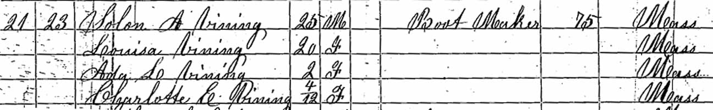
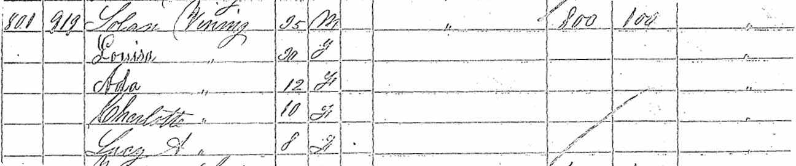
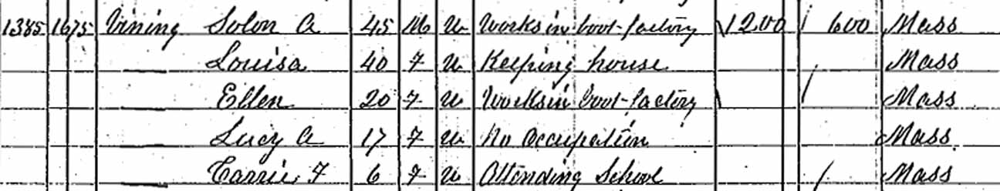
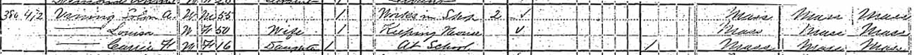

Census Data
| 1850 | 1860 | 1870 | 1880 | 1890 | 1900 | |
| Solon Augustus Vining | 25 | 35 | 45 | 55 | ? | dead |
| Louisa (Holbrook) Vining | 20 | 30 | 40 | 50 | ? | ? |
| Ada Louise Vining | 2 | 12 | [living? in separate household] | |||
| Charlotte E. Vining | 4 m. | 10 | [living? in separate household] | |||
| Lucy A. Vining | 8 | 17 | ? | ? | ? | |
| Carrie F. Vining | 6 | 16 | ? | ? |



